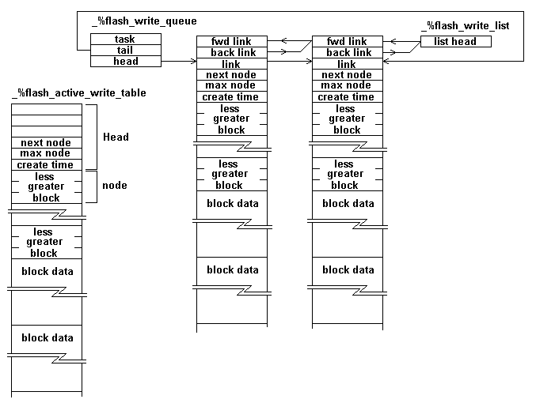

If compiled for system with limited memory this has to be reduced.
\ get written in reasonable chunks.
$8000 CONSTANT _#flash_table_claim_size
A flash file is worse than a harddisk, when you start a write you have to write a large amount of data. And even worse the number of writes is limited to about 1,000,000. To make life real interesting the segment is unavailable while writing the data. And to add real excitment the device is unavailable when it is executing a command.
Just because the medium is a pain doesn't mean we don't want instant read/writes and multiple task access.
To get this writes occure in two stages. The task performing the I/O will write to a data structure. Another task actually writes to the flash.
The internal data structure is shown in the following diagram. The active write table is written to by tasks doing I/O. Buffers in the lists are still scanned for a read but the write task is busy writing them to flash.
A new buffer is added to he chain by:
Note that the stucture write is not time based. If you open a file, write to it and don't close it the data will be lost ( assuming there is no other file activity).

block 0 = boot block 1 = super block block 2 = zone bitmap block 2+x = Inode bitmap block 2+x+y=Inodes
When reading a zone you have to do the following steps in the following order.
\ We can't read the flash when writing to it, the delays are very short.
\ A read operation only claims read, never write
ram_create %flash_read_facility #facility_length ram_allot
\ A write claims write and then read. Read will be claimed if data
\ is to be read from the flash for the write merge.
ram_create %flash_write_facility #facility_length ram_allot
\ The flash write buffer address, the buffer is claimed form the heap.
ram_variable _%fwb
\ start block
ram_variable _%fwb_base
\ number of blocks
ram_variable _%fwb_blocks
\ sector being worked on
ram_variable _%fwb_sector
$400 CONSTANT _#flash_bytes_a_block
The flash is divided into sectors, the following table gives the base address of all sectors as an offset from the chips base address.
The flash has a boot loader and two kernels, in cold the boot loader is started, in warm the boot loader is loaded followed by the kernel stored at address _#flash_boot_normal, in normal the bootloader loads the kernal descibed by data stored in the _#flash_boot_data sector. The forth kernel gives you the option of loading a new kernel suitable for normal booting, the loaded kernel can be forth or another OS.
: addr_to_sector ( addr -- sector)
DUP _#application_flash_base _#application_flash_end WITHIN not
ABORT" Address not in application flash"
_#application_flash_base -
_#sector_size /
;
: sector_offset ( n -- offset )
_#sector_size *
;
: sector_size ( sector -- size_bytes)
DROP _#sector_size
;
forth
: addr_to_sector ( addr -- sector)
DUP _#application_flash_base _#application_flash_end WITHIN NOT
ABORT" Address not in application flash"
_#application_flash_base -
_#sector_size /
;
host
\ convert offsets to secter using the target table.
_#flash_file_base addr_to_sector CONSTANT _#flash_sector_base
\ aborts if sector out of range.
\ Sector is zero based, the number of enteries is one base
: ?sector_in_range ( sector-- )
_#number_sectors
< not IF
panic" Flash: Sector number out of range"
TRUE ABORT" Sector number out of range"
THEN
;
: ?destination_ok ( offset sector --)
DUP ?sector_in_range \ offset sector(--
sector_size
\ offset size (--
< not ABORT" Sector offset too great"
;
: _start_sect_erase ( sector -- )
$00AA _#application_flash_base $555 1 LSHIFT + W! \ 1
$0055 _#application_flash_base $2AA 1 LSHIFT + W! \ 2
$0080 _#application_flash_base $555 1 LSHIFT + W! \ 3
$00AA _#application_flash_base $555 1 LSHIFT + W! \ 4
$0055 _#application_flash_base $2AA 1 LSHIFT + W! \ 5
$0030 \ sector $0030 (--
SWAP sector_offset \ offset into flash
_#application_flash_base + \ $0030 addr (-
W!
;
: _flash_start_erase ( sector --)
DUP ?sector_in_range
_start_sect_erase
;
: _flash_reset ( --)
$00F0 _#application_flash_base W!
;
: _low_toggle? ( --flag)
_#application_flash_base W@ $40 AND
_#application_flash_base W@ $40 AND <>
;
: _flash_sect_erase ( sector -- )
%flash_read_facility grab
_flash_start_erase
\ (--
BEGIN
_low_toggle?
xpause
WHILE
_#application_flash_base W@ $20 AND IF \ may of exceeded time
_low_toggle? IF \ we did
_flash_reset
%flash_read_facility release
$" Low failed to erase"
EXIT
THEN
THEN
REPEAT
%flash_read_facility release
\ success if here
;
\ offset into application flash
: _flashW! { ( value offset ) -- }{
variable %entry_time
#10 CONSTANT #timeout
}
xclock+ @ #timeout + %entry_time !
%flash_read_facility grab
$00AA _#application_flash_base [ $555 1 LSHIFT ]T LITERAL + W!
$0055 _#application_flash_base [ $2AA 1 LSHIFT ]T LITERAL + W!
$00A0 _#application_flash_base [ $555 1 LSHIFT ]T LITERAL + W!
_#application_flash_base + W!
BEGIN
_low_toggle?
WHILE
_#application_flash_base W@
$20 AND IF \ may of exceeded time
_low_toggle? IF \ we did
_flash_reset
%flash_read_facility release
TRUE ABORT" Low failed to program
THEN
THEN
%entry_time @ xclock- @ + 0< IF \ >
_flash_reset
%flash_read_facility release
TRUE ABORT" flash write timeout"
THEN
REPEAT
%flash_read_facility release
\ don't give this a high priority
xpause
;
: _sector_write ( addr sector --)
DUP sector_offset
SWAP sector_size \ from to n
zero DO
OVER I + W@
OVER I + _flashW!
2 +LOOP
2DROP
;
\ This word will claim flash_read_facility as required when writing to flash
: _write_file_sector ( --)
_%fwb @ \ source
_%fwb_sector @
_sector_write
;
Data structures that are to be written to flash are queued here. These will be written to flash given time and the grace of god. These are read in first-in first-out. Has to be this way as the last updates have to be the last written to the flash. The queue can only have one priority level.
| $04 CONSTANT _#flash_queue_depth
_#flash_queue_depth 01 net_queue _%flash_write_queue
The BCM550 has a light but other cards don't so you need this word to find out when the power can be switched off. True when flashed.
: ?flashed ( --flag)
_%flash_write_queue queue_empty?
;
Points to the buffer to which data is currently being written, latter this buffer will be queued for writing to the flash by the flash write task.
ram_variable _%flash_active_write_table
Buffers queued are forward linked here this list is used for the read operation, until the buffers are written they must remain part of the read. The last must be seen first.
ram_variable _%flash_write_list
Describe the write table buffer
fwt -> flash_write_table
0
DUP CONSTANT _#fwt_base
DUP CONSTANT _#fwt_double_link 2 CELLS +
DUP CONSTANT _#fwt_link CELL+
DUP CONSTANT _#fwt_next_entry CELL+
DUP CONSTANT _#fwt_max_entry CELL+
\ This could be used to time out the buffer,
\ but it isn't.
DUP CONSTANT _#fwt_create_time CELL+
DUP CONSTANT _#fwt_head_size
CONSTANT _#fwt_block_pointers
Descibe a block pointer area.
0
DUP CONSTANT _#fwt_bp_less CELL+
DUP CONSTANT _#fwt_bp_greater CELL+
DUP CONSTANT _#fwt_bp_block CELL+
CONSTANT _#fwt_bp_length
: _next_node ( table -- addr)
_#fwt_next_entry +
;
: _max_node ( table --addr )
_#fwt_max_entry +
;
: _node_block ( node table -- addr )
SWAP _#fwt_bp_length *
[ _#fwt_head_size _#fwt_bp_block + ]T LITERAL +
+
;
: _node_less ( node table -- addr )
SWAP _#fwt_bp_length *
[ _#fwt_head_size _#fwt_bp_less + ]T LITERAL +
+
;
: _node_greater ( node table -- addr )
SWAP _#fwt_bp_length *
[ _#fwt_head_size _#fwt_bp_greater + ]T LITERAL +
+
;
: _node_data ( node table -- addr )
SWAP _#flash_bytes_a_block *
OVER _max_node @ _#fwt_bp_length * +
_#fwt_head_size +
+
;
We add the current write buffer fo the write_operations queue. Claim a new buffer and set it up to receive future write requests. This is all done so the tables are always valid for a read operation. Remember we only grab the read facilty if reading from the flash, so read has to be valid at all times. In other words all the write tables have to be valid as a read has to go through them first.
\ CREATE (.buffers) 0 t,
\ : .buffers (.buffers) @execute ;
: _new_write_buffer ( --)
\ send the current buffer to the write task
\ We don't have to claim %flash_read_facility
\ when adding to the structure, only when subtracting from it.
_%flash_active_write_table @ IF
\ If there is no data in the buffer don't do it
\ just wasting every one's time
_%flash_active_write_table @ _next_node @ 0 <> IF
_%flash_active_write_table @
\ forward link for the read
DUP [ _#fwt_double_link _#fwt_base - ]T LITERAL +
_%flash_write_list link_double
\ buffer is now seen by read twice, once as the active write table
\ and once in the flash write list.
zero _%flash_active_write_table !
\ It is now seen by a read once, but the task that writes the write buffers
\ can still not see it.
[ _#fwt_link _#fwt_base - ]T LITERAL +
\ if overload will wait for catchup
\ not we are not linked at the start of the bufffer
\ there is a double link before us
\ .buffers
_%flash_write_queue zero enqueue_wait
ELSE
EXIT
THEN
THEN
\ get a new buffer and make it current
_#flash_table_claim_size get_free_buffer \ addr(--
\ Work out how many blocks I can fit in it
DUP buffer_size \ addr size(--
_#fwt_head_size - \ addr size1(--
[ _#flash_bytes_a_block _#fwt_bp_length + ]T LITERAL
/ \ addr number_of_blocks(--
2DUP
_#fwt_bp_length * _#fwt_head_size + ERASE
\ save maximum number of blocks in table
OVER _#fwt_max_entry + !
xclock+ @ OVER _#fwt_create_time + !
_%flash_active_write_table !
;
The only buffer we have to ask this question against is the _%flash_active_write_table
: _node_available ( --)
_%flash_active_write_table @ not IF
_new_write_buffer
EXIT
THEN
_%flash_active_write_table @ _next_node @
_%flash_active_write_table @ _max_node @
< IF
EXIT
THEN
_new_write_buffer
;
The block has to be searched for in this order.
This word has to be used for the active table and tables queued for writes.
: _?read_flash_table { ( block ) variable _%table_base -- ( addr true|block false ) }
_%table_base @ IF
_%table_base @ _next_node @
0= IF
FALSE
EXIT
THEN
zero BEGIN
2DUP _%table_base @ _node_block @ = IF
NIP _%table_base @ _node_data TRUE
EXIT
THEN
2DUP _%table_base @ _node_block @ < IF
_%table_base @ _node_less @ ?DUP not IF
FALSE
EXIT
THEN
ELSE
_%table_base @ _node_greater @ ?DUP not IF
FALSE
EXIT
THEN
THEN
AGAIN
THEN
FALSE
;
Go through the buffers queued for a flash write.
: _?read_flash_write_queue ( block -- addr true|block false )
_%flash_write_list
BEGIN
@ DUP
WHILE
>R R@
[ _#fwt_base _#fwt_double_link - ]T LITERAL +
_?read_flash_table IF
r>drop
TRUE
EXIT
THEN
R>
REPEAT
DROP
\ not found
FALSE
;
If the flash_task is writing data to the flash the sector being written can't be read from the flash. We have to look at the %flash_write_buffer to get data buffer address, if not zero there is an active sector write and we have to get data from the buffer
: _?read_flash_write_buffer ( block -- addr true| block false )
\ the code that creates the image assumes we will
\ stop playing with this data if _fwb is zero.
_%fwb @ IF
DUP _%fwb_base @ _%fwb_base @ _%fwb_blocks @ + WITHIN IF
_%fwb_base @ - _#flash_bytes_a_block * _%fwb @ + TRUE
EXIT
THEN
THEN
FALSE
;
: _read_from_flash ( block --addr)
_#flash_bytes_a_block * _#flash_file_base +
;
%flash_read_facilty has to be claimed as addr must remain stable
: flash_read ( block -- addr )
\ data is in the active write table
_%flash_active_write_table @ _?read_flash_table IF
\ panic" |WT"
EXIT
THEN
\ data is in the tables queued for the flash_task
_?read_flash_write_queue IF
\ panic" |WQ"
EXIT
THEN
\ data is in buffer flash_task is writeing to the flash
_?read_flash_write_buffer IF
\ panic" read from |WB"
EXIT
THEN
\ data is in the flash, we have to grab the facility
\ to prevent the issueing of a command
\ panic" |FF"
_read_from_flash
;
addr_to is the base adddess of the image block
: _add_to_image ( addr_from num offset addr_to(--)
+
SWAP
\ addr addr_to num (--
MOVE
;
Copies old data to new address and merges in new data
: _flash_merge ( addr num block offset addr--)
%flash_read_facility grab
ROT flash_read
\ addr num offset addr addr_block(--
\ have to move old data to new buffer than merge
OVER
_#flash_bytes_a_block
MOVE
\ if we are moving from flash this will be claimed
%flash_read_facility release
_add_to_image
;
We merge data in this word so as to reduce data movement. We use node numbers in greater and less than fields as we need the node number to get the data address. It may be faster to use node memory addresses and translate to node number when required but I don't think the code would be as clear. And it's bad enough as it is.
In all cases the string will fit into one block as higher code has dealt with that problem.
: add_write_data ( addr count block offset --)
\ can't have two people playing with the write table at once.
%flash_write_facility grab
\ Make sure we can allocate a node if
\ required. If we can't the write buffer is
\ moved to the writing task queue and a new one
\ allocated.
\ That means writes will be merged until there
\ are no free places in the write buffer. The write
\ buffer is then replaced. Ok you may be able to get a
\ few more merges if you look for that possibility first,
\ but code gets a little more complex. And it's bad enough as it
\ is.
_node_available
\ addr count block offset(--
\ treat node zero as a special case
\ makes the rest of the code simpler
_%flash_active_write_table @ _next_node @ 0 = IF \ first entry
OVER >R \ save block to R
\ we can't set the node block until the merge
\ because the merge reads the old data
0 _%flash_active_write_table @ _node_data _flash_merge
R> 0 _%flash_active_write_table @ _node_block !
\ This makes the node readable
1 _%flash_active_write_table @ _next_node +!
%flash_write_facility release
EXIT
THEN
\ addr count block offset(--
zero
BEGIN
\ addr count block offset node(--
\ a write merge
jump OVER _%flash_active_write_table @ _node_block @ = IF
\ addr num block offset entry
ROT DROP
_%flash_active_write_table @ _node_data
\ addr num offset addr
_add_to_image
%flash_write_facility release
EXIT
THEN
jump OVER _%flash_active_write_table @ _node_block @ < IF \ >
\ current block is less than node block
\ if less than pointer use, step to
\ that node and loop again
DUP _%flash_active_write_table @ _node_less @ IF
\ addr count block offset node(--
_%flash_active_write_table @ _node_less @
ELSE
\ addr count block offset node(--
\ claim a new node install in less
\ pointer and set block
jump 2>R
_%flash_active_write_table @ _next_node @
_%flash_active_write_table @ _node_data _flash_merge
2R>
\ node block(--
_%flash_active_write_table @ _next_node @
_%flash_active_write_table @ _node_block !
\ node
_%flash_active_write_table @ _next_node @ SWAP
_%flash_active_write_table @ _node_less !
1 _%flash_active_write_table @ _next_node +!
%flash_write_facility release
EXIT
THEN
ELSE
\ it isn't equal, it isn't less-than so
\ it has to be greater-than
\
\ addr count block offset node
DUP _%flash_active_write_table @ _node_greater @ IF
_%flash_active_write_table @ _node_greater @
ELSE
jump 2>R
_%flash_active_write_table @ _next_node @
_%flash_active_write_table @ _node_data _flash_merge
2R>
\ node block(--
_%flash_active_write_table @ _next_node @
_%flash_active_write_table @ _node_block !
\ node
_%flash_active_write_table @ _next_node @ SWAP
_%flash_active_write_table @ _node_greater !
1 _%flash_active_write_table @ _next_node +!
%flash_write_facility release
EXIT
THEN
THEN
AGAIN
;
Active buffer
ram_variable _%fwb_working
Done this way so recursion doesn't put much demand on the stacks.
ram_variable _%fwb_active_table
You have to have a valid image of sector while your writing it to ram so you may as well do the updates to the image.
: _deal_with_block ( node --)
\ If the image hasn't been started start it.
_%fwb_working @ 0= IF
\ get a free buffer and read data from the flash
\ This word is used in the task that writes to the flash
\ so we don't have to claim the flash to read it.
_%fwb_blocks @ _#flash_bytes_a_block * get_free_buffer
_%fwb_working !
_%fwb_base @ _#flash_bytes_a_block * _#flash_file_base +
_%fwb_working @
_%fwb_blocks @ _#flash_bytes_a_block *
MOVE
_%fwb_sector @ _flash_sect_erase
THEN
\ move the write buffer into the sector image.
DUP _%fwb_active_table @ _node_data
SWAP _%fwb_active_table @ _node_block @ _%fwb_base @ -
_#flash_bytes_a_block *
_%fwb_working @ +
_#flash_bytes_a_block MOVE
;
Use a binary tree, write recursive code, simple as that.
: _write_blocks_in_range ( node -- )
BEGIN
DUP _%fwb_active_table @ _node_block @ _%fwb_base @
<
WHILE
_%fwb_active_table @ _node_greater @ ?DUP not IF
EXIT
THEN
REPEAT
\ if we get here we have a anode that has
\ a greater or equal block
BEGIN
\ node (-- greater or equal block value
DUP _%fwb_active_table @ _node_less @ ?DUP IF
RECURSE
THEN
\ node(--
DUP \ node node(--
_%fwb_active_table @
\ node node active(--
_node_block @
\ node addr(--
_%fwb_base @ _%fwb_blocks @ +
\ node flag(--
< IF
DUP _deal_with_block
ELSE
DROP
EXIT
THEN
\ node(--
_%fwb_active_table @ _node_greater @ ?DUP not IF
EXIT
THEN
AGAIN
;
Single threaded linked list.
: link_single ( addr head --)
DUP @ jump !
!
;
On entry, copy the queue end pointer to a temp location, all entries up to the entry end pointer shall be dealt with. On entry the flash facility is not claimed. The flash facility only needs to be claimed for short periods while the data is being written.
ram_variable %flash_write_in
ram_variable %flash_write_out
: _write_buffers_to_flash { -- }{
variable _%fwb_active_end
}
_%flash_write_queue [ #queue_data_length #queue_list_end + ]T LITERAL + @
_%fwb_active_end !
\ Once around for each sector in the flash
\ I is the flash sector offset
\ _sector_offsets @ _#flash_sector_base DO
_#number_sectors _#flash_sector_base DO
I sector_offset I sector_size
\ sector_offset length_sector (--
\ this is the flash sector
I _%fwb_sector !
_#flash_bytes_a_block / _%fwb_blocks ! \ number of bocks in this sector
[ _#flash_file_base _#application_flash_base - ]T LITERAL
- _#flash_bytes_a_block / _%fwb_base ! \ base block in this sector
\ if this gets set then the sector has to be written
zero _%fwb_working !
_%flash_write_queue [ #queue_data_length #queue_list_head + ]T LITERAL + BEGIN
@
\ link(--
\ link is the head of a fwt ( flash_write_table )
\ if we find any blocks in the range set we
\ call setup_buffer
DUP [ _#fwt_base _#fwt_link - ]T LITERAL + _%fwb_active_table !
\ allow for a write buffer that has no data
_%fwb_active_table @ _next_node @ 0 <> IF
zero _write_blocks_in_range
THEN
DUP _%fwb_active_end @
=
UNTIL
DROP
\ if _%fwb_working is set we
\ a) have to write this sector
\ b) have to make the image available for
\ for reads.
_%fwb_working @
IF
_%fwb_working @ _%fwb !
['] _write_file_sector CATCH ?DUP IF
\ well we do have problems. If we reclaim the
\ write buffer the data read from the flash is in a mess
\ if we don't the system is in a mess.
\ The task is going to die so writes are finished.
\ Lets just tidy up and look the other way.
\ sector is written
\ just in case someone is using our buffer
%flash_read_facility grab
_%fwb @
0 _%fwb !
%flash_read_facility release
kill_free_buffer
$ABORT
THEN
\ sector is written
\ just in case someone is using our buffer
%flash_read_facility grab
_%fwb @
0 _%fwb !
%flash_read_facility release
kill_free_buffer
THEN
LOOP
\ all data in write buffers linked up to _%fwb_active_head
\ have been dealt with.
BEGIN
%flash_read_facility grab
_%flash_write_queue dequeue
\ once this is done the buffer is no longer used for a read
DUP [ _#fwt_double_link _#fwt_link - ]T LITERAL + unlink_double
%flash_read_facility release
DUP [ _#fwt_base _#fwt_link - ]T LITERAL + kill_free_buffer
_%fwb_active_end @ =
UNTIL
;
\ object
\ :construct
\ :destruct
\ :print
\ link_object
\ :list_head
\ :link_cleanup
\ :unlink_cleanup
\ :number_of_links
\ parented_object
\ :facility
\ :parent_instance
\ :!name
\ :@name
\ :@root
\ io_common
\ :span
\ :!terminal
\ :@terminal
\ :file_open
\ :!file_instance
\ :!timeout
\ :@timeout
\ :!mode
\ :@mode
\ :read
\ :read_line
\ :previous_line
\ :flush_file
\ :write
\ :buffer_size!
\ :cr
\ :write_line
\ :type
\ :mark
\ :status
\ :?send
\ :reposition_file
\ :file_position
\ :key?
\ :clear
\ :!control
\ :!eot
\ :linemode
\ :!device
\ :baud
\ :?page
\ :!?page
\ :character#
\ :line#
\ :page#
\ :page!
\ :line_max
\ :character_max
\
\ :normal
\ :rev
\ : blink
\ :dim
\ :udl
\ :dim&blink
\ :rev&blinl
\ :rev&dim
\ :rev&udl
\ :rev&dim&blink
\ :rev&dim&udl
\ :tab
\ :page
\ :>|
\ :|>
\ :|i
\ :|o
\ :|v
\ :|h
\ :|n
\ :|tl
\ :|tr
\ :|br
\ :termination>code
\ :box
\ :element
\ :line
\ :zed
\ :labels
\ :shift_labels
\ :cursor
\ :no_curser
\ :message
\ :no_message
\ :foreground
\ :background
\ :border
\ :a4
\ :quarto
\ :eoj
\ :@control_block
\ :!control_block
\ :bye
\ :consume_port
\ :priority!
\ :terminal_mode!
\ :terminal_mode@
\ :inuse?
\ :@file_size
\ :!file_size
\ :?directory
\ :get_directory_name
\ :put_directory_name
\ :next_directory_cookie
\ :first_directory_cookie
\ :make_file
\ :remove_file
\ :inode_head
\ :open_inode
\ :close_inode
\ :make_directory
\ :format
\ :file_offset>device_offset
\ :bytes_a_zone
io_common class
protected
cell% instance_variable %%written_to_file
\ The structure of the inode and the super block
\ are device dependent. The class needs to supply
\ mothods to acess the data as required.
\ describe the inode
\ ------------------
7 CONSTANT _#direct_zones
4 CONSTANT _#zone_entry_size
_#zone_entry_size >asl CONSTANT _#zone_entry_size_asl
\ Declaration of the V2 inode
\ The I node stucture remains the same across all file types
zero \ V2.x disk inode
DUP CONSTANT _#d2_mode 2+ \ file type, protection, etc.
\ This allows the same file to be access through different names
DUP CONSTANT _#d2_nlinks 2+ \ how many links to this file. HACK!
DUP CONSTANT _#d2_uid 2+ \ user id of the file's owner.
DUP CONSTANT _#d2_gid 2+ \ group number HACK!
DUP CONSTANT _#d2_size 4+ \ current file size in bytes
\ All times are in seconds since Jan 1 1970
DUP CONSTANT _#d2_atime 4+ \ when was file data last accessed
DUP CONSTANT _#d2_mtime 4+ \ when was file data last changed
DUP CONSTANT _#d2_ctime 4+ \ when was inode data last changed
\ block nums for direct, ind, and dbl ind
DUP CONSTANT _#d2_direct_zones _#direct_zones _#zone_entry_size * +
DUP CONSTANT _#d2_indirect_zone _#zone_entry_size +
DUP CONSTANT _#d2_double_indirect_zone _#zone_entry_size +
DUP CONSTANT _#d2_spare 4+ \ brings the structure to 64 bytes
CONSTANT _#d2_inode_length
_#d2_inode_length >asl CONSTANT _#d2_inode_length_asl
\ describe the mode
80 CONSTANT _#d2_mode_directory
\ as not 100% curtain on mimix format set our own code
0x1234 CONSTANT CVS_V2 \ magic # for CVS_V2file systems
zero
DUP CONSTANT _#s_ninodes 2+ \ # usable inodes
DUP CONSTANT _#s_nzones 2+ \ total device size, including bit maps etc.
DUP CONSTANT _#s_imap_blocks 2+ \ # of blocks used by inode bit map
DUP CONSTANT _#s_zmap_blocks 2+ \ # of blocks used by zone bit map
DUP CONSTANT _#s_firstdatazone 2+ \ number of first data zone
DUP CONSTANT _#s_log_zone_size 2+ \ log2 of blocks/zone
DUP CONSTANT _#s_max_size 4+ \ maximum file size on this device
DUP CONSTANT _#s_magic 2+ \ magic number to recognize super-blocks
DUP CONSTANT _#s_pad 2+
DUP CONSTANT _#s_zones 4+ \ number of zones (replaces _#s_nzones in V2)
DUP CONSTANT _#super_block_length
\ The following items are only used when the super_block is in memory.
DUP CONSTANT _#s_ndzones CELL+ \ direct zones in an inode
DUP CONSTANT _#s_nindirs CELL+ \ # indirect zones per indirect block
DUP CONSTANT _#s_zmap_offset CELL+
DUP CONSTANT _#s_inodes_offset CELL+ \ byte offset to first Inode
DUP CONSTANT _#s_isearch CELL+ \ inodes below this bit number are in use
DUP CONSTANT _#s_zsearch CELL+ \ all zones below this bit number are in use
DUP CONSTANT _#s_super_block_set CELL+
CONSTANT _#super_block_memory \
\ The following are fixed for all mimix block devices.
$00400 CONSTANT _#start_super_block
$00800 CONSTANT _#start_Inode_bit_map
_#flash_bytes_a_block CONSTANT _#bytes_block
_#bytes_block >asl CONSTANT _#bytes_block_asl
\ The directory is stored in a file, but the actual structure belongs to
\ the device.
\ For flash total directory entry length is $40
3C CONSTANT _#dir_string_length
zero
DUP CONSTANT _#dir_inode> cell +
DUP CONSTANT _#dir_string _#dir_string_length +
CONSTANT _#dir_length
$40 _#dir_length ??=
$800 CONSTANT _#m_bytes_a_zone
_#direct_zones
_#m_bytes_a_zone _#zone_entry_size / + \ number of zones that can be pointed too
_#m_bytes_a_zone *
\ This can be increased by implementing double indirection pointers.
\ As it is it is a little over 1meg
CONSTANT _#m_max_file_size
\ number of I determines maximum number of files
\ as files end up pointing back to an Inode
\ On a ram disk, I don't know 512 should be enough.
$80 CONSTANT _#m_inodes_number
1 CONSTANT #root_inode
\ the bit maps are read and written as required, but they
\ must not be read without grabbing _%device_facility.
\ And you don't release until alterations are written
\ back.
ram_create _%device_facility #facility_length ram_allot
\ all openings are liked into here, this includes openings
\ of devices and files on the device.
ram_variable _%flash_opened_files
\ the disk structure belongs to the device
ram_create _%super_block _#super_block_memory ram_allot
\ all opened inodes are liked into here
_create_double_listhead _%opened_inodes
\ setup class data structure if first instance of the class.
: _setup_super_block ( --)
\ erase the region that is not copied form disk
[ _%super_block _#super_block_length + ]T LITERAL
[ _#super_block_memory _#super_block_length - ]T LITERAL ERASE
\ copy the super block from disk
_#start_super_block this :reposition_file
_%super_block _#super_block_length this :read
_#super_block_length <> ABORT" Super block read failed"
\ offset to zmap
_#start_Inode_bit_map
_%super_block _#s_imap_blocks + W@ _#bytes_block_asl LSHIFT +
DUP _%super_block _#s_zmap_offset + !
\ offset to inodes
_%super_block _#s_zmap_blocks + W@ _#bytes_block_asl LSHIFT +
_%super_block _#s_inodes_offset + !
\ indicate we have tried.
TRUE _%super_block _#s_super_block_set + !
;
\ flash
: inode_seek ( u inode_code --)
\ subtract one as inode one is stored as inode zero
\ n inode(--
1 -
_#d2_inode_length_asl LSHIFT +
_%super_block _#s_inodes_offset + @ +
this :reposition_file
;
: _zone>offset ( zone_number -- device_offset )
[ _#m_bytes_a_zone >asl ]T LITERAL LSHIFT
;
: _offset>zone ( offset -- zone )
[ _#m_bytes_a_zone >asl ]T LITERAL RSHIFT
;
\ flash
$10 CONSTANT _#bitchunk_bits
\ **
\ flag is true if you managed to claim
\ base_offset is the base of the bitmap relative to
\ the start of the device.
\ flash
: set_bit { ( base_offset bit_number --flag) }{
_#bitchunk_bits >asl CONSTANT _#bitchunk_asl \ 4
_#bitchunk_bits 8 / CONSTANT _#bitchunk_bytes \ 2
_#bitchunk_bits 8 / >asl CONSTANT _#bitchunk_bytes_asl \ 1
_#bitchunk_bits 8 / 2 ??=
variable _%temp_bitchunk
}
\ number is one based
DUP _#bitchunk_asl RSHIFT
_#bitchunk_bytes_asl LSHIFT
1 ROT
\ base_offset offset 1 num(--
[ _#bitchunk_bits 1- ]T LITERAL AND LSHIFT
-rot
+
\ mask offset+base(--
2DUP
\ bit map must remain stable
_%device_facility grab
this :reposition_file
\ mask offset+base mask(--
_%temp_bitchunk _#bitchunk_bytes this ['] :read CATCH
?DUP IF
_%device_facility release
$ABORT
THEN
_#bitchunk_bytes <> ABORT" Can't read bitmap"
_%temp_bitchunk W@ AND IF \ already set can't have
_%device_facility release
2DROP
FALSE
EXIT
THEN
\ mask offset+base(--
SWAP _%temp_bitchunk W@ OR _%temp_bitchunk W!
\ offset+base(--
this :reposition_file
_%temp_bitchunk _#bitchunk_bytes this ['] :write CATCH
?DUP IF
_%device_facility release
$ABORT
THEN
_%device_facility release
TRUE
;
\ There is always a trade off, this version is slow when
\ searching for the first free bit, but fast thereafter.
\ base_offset is the base of the bitmap relative to
\ the start of the device.
\ flash
: reset_bit { ( base_offset bit_number --) }{
_#bitchunk_bits >asl CONSTANT _#bitchunk_asl \ 4
_#bitchunk_bits 8 / CONSTANT _#bitchunk_bytes \ 2
_#bitchunk_bits 8 / >asl CONSTANT _#bitchunk_bytes_asl \ 1
_#bitchunk_bits 8 / 2 ??=
variable _%temp_bitchunk
}
\ number is one based
DUP _#bitchunk_asl RSHIFT
_#bitchunk_bytes_asl LSHIFT
\ base_offset num offset(--
1 ROT
\ base_offset offset 1 num(--
[ _#bitchunk_bits 1- ]T LITERAL AND LSHIFT
\ base_offset offset mask(--
-rot
+
\ mask offset+base(--
DUP
\ mask offset+base offset+base(--
\ the bit map must remain stable between read and write
_%device_facility grab
this :reposition_file
\ mask offset+base (--
_%temp_bitchunk _#bitchunk_bytes this ['] :read CATCH
?DUP IF
_%device_facility release
$ABORT
THEN
_#bitchunk_bytes <> ABORT" Can't read bitmap"
\ mask offset+base(--
SWAP -1 XOR
_%temp_bitchunk W@ AND _%temp_bitchunk W!
\ offset+base(--
this :reposition_file
_%temp_bitchunk _#bitchunk_bytes this ['] :write CATCH
?DUP IF
_%device_facility release
$ABORT
THEN
_%device_facility release
;
\ This word is reguired by the file class it calls this method
\ using it's parent_instance
\
: _get_zone ( --zone)
_%super_block _#s_zones + @
_%super_block _#s_zsearch + @ DO
_%super_block _#s_zmap_offset + @
I set_bit IF \ this zone is ours
\ update first unclaimed z pointer
I 1+ _%super_block _#s_zsearch + !
\ This is not a security sytem, we don't clean the new block.
\ If your into such things this is where you would put it, but in a
\ system without a mmu such rot is a waste of time.
\ And this is a non mmu OS
I
UNLOOP
EXIT
THEN
LOOP
\ get to here we have serious problems, no free zones
\ disk is full.
TRUE ABORT" No free zones"
;
\ flash
: _return_zone ( zone --)
_%super_block _#s_zmap_offset + @
OVER reset_bit
_%super_block _#s_zsearch + @
MIN
_%super_block _#s_zsearch + !
;
\ deals with the inode bitmap
: get_inode ( --inode)
_%super_block _#s_ninodes + W@
_%super_block _#s_isearch + @ DO
\ device offset imap
_#start_Inode_bit_map
I set_bit IF \ this Inode is ours
\ update first unclaimed inode pointer
\ We add one as I is the inode claimed.
I 1+ _%super_block _#s_isearch + !
\ clean up the inode
_#d2_inode_length get_buffer
buffer _#d2_inode_length ERASE
buffer I _#d2_inode_length_asl LSHIFT
_%super_block _#s_inodes_offset + @ + this :reposition_file
_#d2_inode_length this :write
kill_buffer
\ inode zero is set as inode 1
I 1+
UNLOOP
EXIT
THEN
LOOP
\ get to here we have serious problems, no free inodes
TRUE ABORT" No free inodes"
;
\ deals with the inode bitmap
\ flash
: _return_inode ( inode --)
1- ( inode 1 is inode zero)
_#start_Inode_bit_map OVER reset_bit
_%super_block _#s_isearch + @ MIN
_%super_block _#s_isearch + !
;
\ The inode contains a few zone pointers, if the file
\ is small this is all that gets used.
\ The entry stack item is the zone number within the file
\ before we enter this word the higher code has checked that
\ the entry value is a direct zone.
\ can only be used in a flash method see inode_seek
_#zone_entry_size 4 ??=
: _direct_zone>offset { ( zone_number ) variable _%inode -- ( device_offset) }{
variable _%temp_buffer
}
_#zone_entry_size_asl LSHIFT
_#d2_direct_zones + DUP _%inode @ inode_seek
\ inode_offset (--
_%temp_buffer _#zone_entry_size this :read
_#zone_entry_size <> ABORT" Can't read inode zone entry"
_%temp_buffer @ ?DUP IF
\ inode_offset zone (--
NIP
_zone>offset
EXIT
THEN
_get_zone
DUP _%temp_buffer !
\ inode_offset zone(--
SWAP _%inode @ inode_seek
_%temp_buffer _#zone_entry_size this :write
_zone>offset
;
\ The inode entry contains a pointer to a zone that points to zones.
\ We refer to the zone containing pointers as the indirect_table
\ Can only be used in a flash method see inode_seek
_#zone_entry_size 4 ??=
: @indirect_table { variable _%inode -- ( device_indirect_table_offset) }{
variable _%temp_buffer
}
_#d2_indirect_zone _%inode @ inode_seek
\ (--
_%temp_buffer _#zone_entry_size this :read
_#zone_entry_size <> ABORT" Can't read inode indirect entry"
_%temp_buffer @ ?DUP IF
\ allready allocated
\ disk_zone(--
_zone>offset
EXIT
THEN
_get_zone _%temp_buffer !
this :bytes_a_zone get_buffer
buffer this :bytes_a_zone ERASE
\ write relative to device
_%temp_buffer @ _zone>offset
this :reposition_file
buffer this :bytes_a_zone
this ['] :write CATCH
?DUP IF
kill_buffer
$ABORT
THEN
kill_buffer
\ (--
_#d2_indirect_zone _%inode @ inode_seek
_%temp_buffer _#zone_entry_size this :write
_%temp_buffer @ _zone>offset
;
_#zone_entry_size 4 ??=
: _indirect_zone>offset { ( indirect_zone_device_offset ind_zone_num -- device_offset) }{
variable _%temp_buffer
}
_#zone_entry_size_asl LSHIFT \ offset in zone
+ DUP
this :reposition_file
_%temp_buffer _#zone_entry_size this :read
_#zone_entry_size <> ABORT" Cannot read indirect zone table"
\ offset(--
_%temp_buffer @ ?DUP IF \ has been allocated
NIP
_zone>offset
EXIT
THEN
_get_zone _%temp_buffer !
\ offset(--
this :reposition_file
_%temp_buffer _#zone_entry_size this :write
_%temp_buffer @ _zone>offset
;
\ flash
\ you delete a file by writing zero to the inode pointer
\ and decrementing the inode count. If the inode count
\ gets to zero the inode is deleted. Deleting inodes
\ can involve considerable work
_#dir_inode> 0 ??=
_#dir_string _#dir_inode> - cell ??=
: _find_empty_directory_entry { variable %handle -- ( offset ) }{
variable _%temp_buffer
}
%handle @ :?directory not ABORT" Not a directory"
zero
BEGIN
DUP %handle @ :reposition_file
_%temp_buffer cell %handle @ :read
cell <> IF
EXIT
THEN
\ file_offset (--
_%temp_buffer @ not IF
EXIT
THEN
_#dir_length +
AGAIN
;
: !directory_inode { ( value cookie) variable %handle -- }{
variable %temp_buffer
}
_#dir_inode> + %handle @ :reposition_file
%temp_buffer !
%temp_buffer cell %handle @ :write
;
In the directory file create the pointer to the new file The new file is a directory.
\ inode describes blocks containing file
\ addr num describes the name.
: search_directory { ( addr len ) variable %handle -- ( cookie true| false) }
%handle @ :first_directory_cookie
BEGIN
\ addr len cookie(--
#$buffer get_buffer
3DUP \ addr len code addr len code(--
buffer #$buffer %handle @ ['] :get_directory_name CATCH
?DUP IF
kill_buffer
$ABORT
THEN
buffer SWAP COMPARE
kill_buffer
not IF
\ addr len dir_code(--
NIP NIP TRUE
EXIT
THEN
%handle @ :next_directory_cookie
not
UNTIL
2DROP
FALSE
;
: add_directory_entry { ( addr len inode ) variable %handle -- }
-rot
\ inode addr len(--"
2DUP %handle @ search_directory ABORT" File is already defined"
\ The file has to be claimed, we don't want someone else
\ using our empty directory entry
\ inode addr len(--
%handle @ :facility grab
\ inode addr len(--
%handle @ ['] _find_empty_directory_entry CATCH
?DUP IF
%handle @ :facility release
$ABORT
THEN
\ inode addr len dir_code(--
-rot
\ inode dir_code addr len (--
jump %handle @ DUP ['] :put_directory_name CATCH
?DUP IF
%handle @ :facility release
$ABORT
THEN
\ inode dir_code(--
%handle @ ['] !directory_inode CATCH
?DUP IF
%handle @ :facility release
$ABORT
THEN
%handle @ :facility release
;
\ delete a file
\ --------------
_#zone_entry_size cell ??=
: _return_direct_zones { ( inode --) }{
variable _%temp_buffer
}
_#direct_zones _#zone_entry_size * zero DO
_#d2_direct_zones I + OVER inode_seek
_%temp_buffer _#zone_entry_size this :read
_#zone_entry_size <> ABORT" Can't read direct zones"
_%temp_buffer @ ?DUP IF
_return_zone
THEN
_#zone_entry_size +LOOP
DROP
;
_#zone_entry_size cell ??=
: _return_zone_table_zones { ( indirect_zone_disk_offset -- ) }{
variable _%temp_buffer
}
\ indirect_zone_offset(--
this :bytes_a_zone _#zone_entry_size_asl RSHIFT zero DO
DUP this :reposition_file
_%temp_buffer _#zone_entry_size this :read
_#zone_entry_size <> ABORT" Cannot read indirect zone table"
\ offset(--
_%temp_buffer @ ?DUP IF
_return_zone
THEN
_#zone_entry_size +
LOOP
DROP
;
\ file
: _return_indirect_zone { ( inode -- ) }{
variable _%temp_buffer
}
_#d2_indirect_zone SWAP inode_seek
\ (--
_%temp_buffer _#zone_entry_size this :read
_#zone_entry_size <> ABORT" Can't read inode indirect entry"
_%temp_buffer @ ?DUP IF
\ allready allocated
\ indirect_zone(--
_zone>offset
_return_zone_table_zones
_%temp_buffer @ _return_zone
THEN
;
: bytes_left_in_block ( offset --n)
_#flash_bytes_a_block 1 - AND
_#flash_bytes_a_block SWAP -
;
\ you have to be able to make a directory from a device object
\ otherwise you can't make you first directory.
: @file_mode { variable %file_handle ( -- mode ) }{
variable %temp_buffer
}
_#d2_mode %file_handle @ :inode_instance :inode_code inode_seek
\ parent_inode(--
%temp_buffer 2 this :read
2 <> IF
TRUE ABORT" Can't read Inode"
THEN
%temp_buffer W@
;
: !file_mode { ( mode ) variable %file_handle -- }{
variable %temp_buffer }
_#d2_mode %file_handle @ :inode_instance :inode_code inode_seek
%temp_buffer W!
%temp_buffer 2 this :write
;
\ remove trailing zeros
\ Needed for directory entries
: 0trailing ( addr num --addr num2)
DUP not IF EXIT THEN
CHARS \ addr bytes(--
OVER + \ start end(--
OVER SWAP
\ start start end(--
[ 1 CHARS ]T LITERAL - DO
\ start(--
I char@ IF
I OVER - bytes>chars
\ add 1 char
1+
UNLOOP
EXIT
THEN
[ 1 CHARS NEGATE ]T LITERAL
+LOOP
\ start(--
\ If here all string is null
zero
;
: clean_up_a_directory { variable %handle -- }
#$buffer get_buffer
\ this is only relevent for flash so method
\ really doesn't have to be called the result is zero
%handle @ :first_directory_cookie
\ cookie(--
BEGIN
\ don't do anything with . and ..
DUP buffer #$buffer %handle @ ['] :get_directory_name CATCH
?DUP IF
kill_buffer
$ABORT
THEN
buffer OVER S" ." COMPARE not
\ cookie count flag(--
OVER
buffer SWAP S" .." COMPARE not OR not IF
\ cookie count(--
buffer OVER %handle @ :remove_file
THEN
DROP
%handle @ :next_directory_cookie
not UNTIL
kill_buffer
;
public
\ flash
\
m: ( parent_ihandle -- )
\ If you want to format a device you open it, claim it and
\ see that no one else has it. For this to work the open has to
\ claim the device also.
this :facility grab
this [parent] :construct
this :facility release
0 %%written_to_file !
\ setup on first read, if device contains rubbish it
\ will be set to rubbish
_%super_block _#s_super_block_set + @ not IF
_setup_super_block
THEN
; overrides :construct
\ on a file close force the writing of data to disk
m: ( --)
%%written_to_file @ IF
_new_write_buffer
THEN
this [parent] :destruct
; overrides :destruct
\ After the device is opened by Sopen, the device :file_open method is used
\ to consume the rest of the open string.
\ As a result the only structure that is fixed is the requirement that
\ the open command starts with the driver name.
: @directory_inode { ( cookie -- value) }{
variable %temp_buffer
}
_#dir_inode> +
@file_instance
:reposition_file
%temp_buffer cell @file_instance :read
cell <> ABORT" Can't read dir inode"
%temp_buffer @
;
| : _open_root_dir ( --)
\ open root directory as file
one this :open_inode
\ inode_instance(--
this file_class heap_object
%%file_instance !
;
m: ( addr num mode -- handle )
this :!mode
DUP not IF
2DROP
\ no string after we open the device
this
EXIT
THEN
[CHAR] / remove_leading
2DUP this :!name
_open_root_dir
\ addr num(--
\ We now trace down the the string until the string is
\ empty, the last inode found is then the file.
BEGIN
\ addr num(--
[CHAR] / remove_leading
[CHAR] / left_split
\ left_addr left_len right_addr right_nun (--
2SWAP
DUP
WHILE
\ We need a directory, do we have one
\ note: If we abort we destroy the object we are adding to the stucture
\ we cannot close as we are executing from an object that is part
\ of the structure.
%%file_instance @ ['] :?directory CATCH
?DUP IF
%%file_instance @ heap_object_free
$ABORT
THEN
not IF
%%file_instance @ heap_object_free
TRUE ABORT" not a directory"
THEN
\ addr1 num1 addr2 num2(--
\ we grab the file as we don't want the structure
\ we are searching getting altered.
\ This claims a facility in the file inode. The inode object
\ is the only thing common when a file is opened multiple times.
%%file_instance @ :facility grab
%%file_instance @ ['] search_directory CATCH
?DUP IF
%%file_instance @ :facility release
%%file_instance @ heap_object_free
$ABORT
THEN
\ addr1 num1 cookie true | addr1 num1 false(--
not IF
%%file_instance @ :facility release
%%file_instance @ heap_object_free
$file_not_found $ABORT
THEN
\ the stucture we are playing with looks like this
\ root (- device (-- file1
\ We are currently executing code from the device object.
\ We want to change the structure so it is.
\ root (-- device (-- file2
\ To do this we claim the inode of file1, search it for the
\ inode of file2, create the file2 object so it is pointing to
\ this, thus we have the second structure. Then we destroy the
\ file1 object.
\ addr1 num1 cookie(--
@directory_inode this :open_inode
\ inode_instance(--
\ file_class needs inode_instance and parent_instnace
this file_class heap_object
this :!file_instance
REPEAT
\ addr num addr num(--
\ The now empty string.
2DROP 2DROP
%%file_instance @ \ the handle
\ root (-- device (-- file_handle
\ Or in other words we do not have any claim to the directory files.
\ For thi reason a directory that is to be deleted should delete all it's files
\ first as it is the only way to find out if a file in the directory is open.
; overrides :file_open
m: ( --addr)
_%flash_opened_files
; overrides :list_head
\ device_common
m: ( --addr)
_%device_facility
; overrides :facility
\ flash
\ ----------------------------------------------------------------------
\ functions to be overriden to have format work on different sized files
\ number of inodes
\ total bytes in file system
\ this has to be exported for file as file has to know howmanybytes in a block
\ when deblocking the data
m:
_#m_bytes_a_zone
; overrides :bytes_a_zone
\ ----------------------------------------------------------------------
\ If required get a zone out of the free zone map and add to the inode.
\ This word sets some policies.
\ 1) If you search to some way off block and write a byte, do you
\ put the entire structure in place?
\ 2) Do you allow the allocation of blocks more than one past the file
\ length?
\ 3) Do we clean blocks before allocation?
\
\ 1) We move to the block that would contain thebyte in the file
\ and only look at the zone pointer
\ at that point. This makes a read a little more
\ complex as read may have to allocte blocks. It does however allow the
\ use of a offset as an entry point to a sparse data base. Blocks will
\ only be added at points where fata is stored.
\ 2) Allowng you to preallocate blocks. is useful if you want the file
\ to be in one place, for application support you need extra words, and even
\ when present there is no garantee, so no. Only have blocks that have been
\ read or written.
\ 3) Are newly allocated zones cleaned, simple to do but I don't think so,
\ this OS is for non MMU systems.
\
_#zone_entry_size 4 ??=
m: { ( file_offset ) variable _%inode -- ( disk_offset) }
\ Remember that we can't have zone zero in a file
\ that contains the boot block etc. So a zero in a zone
\ pointer means no zone as been allocated yet
\ offset(--
DUP this :bytes_a_zone 1 - AND
\ offset offset_within_zone(--
SWAP
_offset>zone
\ offset_within_zone zone
DUP _#direct_zones < IF
_%inode @
_direct_zone>offset
+
EXIT
THEN
_#direct_zones -
\ offset_within_zone zone_num(--
DUP
\ this calculates the number of entries in a indirect pointer zone
this :bytes_a_zone _#zone_entry_size_asl RSHIFT
< IF \ >
\ zone pointer table is pointed to by the inode
\ this may involve a zone allocation
\ The value is returned as a device offset
_%inode @ @indirect_table
\ offset_within_zone ind_zone_num indirect_table_device_offset(--
SWAP
_indirect_zone>offset
+
EXIT
THEN
this :bytes_a_zone _#zone_entry_size_asl RSHIFT -
\ offset_within_zone ind_ind_zone(--
TRUE ABORT" Double indirect not done"
; overrides :file_offset>device_offset
\ this create a file instance handle using a inode as
\ the reference to the file
| : _?device ( handle -- flag)
:parent_instance @class root = ;
: open_inode_as_file ( inode device_instance --file_instance)
\ inode device_instance(--
DUP _?device not IF
.obj
TRUE ABORT" Expect a device instance"
THEN
\ inode device_instance (--
root heap_object
\ inode device_instance root_instance(--
SWAP @class heap_object
\ inode device_instance(--
TUCK :open_inode
\ device_instance inode_instance(--
OVER file_class heap_object
\ device_instance file_instance(--
TUCK
SWAP :!file_instance
;
\ dir_handle is the hamdle of the file to which the directory has to be added.
\ we have to open the new directory to add . and ..
m: { ( addr num dir_handle --) }{
\ A Inode is obtained and a file created
\ against that inode the file contains .. and .
\ directory entries.
\ . points to the inode
\ .. points to the parent
variable _%new_file_instance
variable _%inode_code
}
\ returns a free inode number; the inode is no longer in the free
\ list. If we fail now the inode is lost
get_inode DUP _%inode_code !
this open_inode_as_file
\ add num dir_handle file_handle (--
_%new_file_instance !
\ addr num dir_handle(--
\ As the new inode is not in a directory it's existance is only
\ known to us.
\ we opened the file against ourselves.
\ We can set the seek value through the new file
\ we can read with our read words
_%new_file_instance @ ['] @file_mode CATCH
?DUP IF
\ closing the file will also deal with the inode_instance
_%new_file_instance @ close
$ABORT
THEN
_#d2_mode_directory OR
_%new_file_instance @ ['] !file_mode CATCH
?DUP IF
_%new_file_instance @ close
$ABORT
THEN
\ now to add the .. and . directory
\ addr num parent_handle(--
DUP _?device IF
#root_inode
ELSE
\ .. points to the inode of directory containing the direcory
DUP :inode_instance :inode_code
THEN
S" .." ROT _%new_file_instance @
['] add_directory_entry CATCH
?DUP IF
_%new_file_instance @ close
$ABORT
THEN
S" ." _%new_file_instance @ :inode_instance :inode_code _%new_file_instance @
\ addr num dir_handle addr num node file_handle (--
['] add_directory_entry CATCH
?DUP IF
_%new_file_instance @ close
$ABORT
THEN
\ remember that :destruct also tries to do
\ away with the inode_instance, which is what we want
_%new_file_instance @ close
_%inode_code @
\ :format will make a directory, but the handle supplied
\ is for a device not a directory
SWAP DUP
\ addr num inode_code dir_handle(--
_?device IF
2DROP 2DROP
ELSE
add_directory_entry
THEN
; overrides :make_directory
\ The only way to format a device is to open it, therfore we have to be
\ able to open the device before it is formatted.
\ You do however have to format if you want to open a file on the medium.
m: { ( --) }{
variable _%first_data_zone
variable _%imap_blocks
variable _%zmap_blocks
}
\ you may not play with the disk structure without getting the
\ device facility
_#super_block_length get_buffer
\ -----------
\ number of Inodes
\ The super block and Inode follow the mimix standard
\ doing this allows the same code to be used
\ for floppies; should we ever see them again.
_#m_inodes_number _#s_ninodes buffer + W!
\ -----------
\ total device size in zones
\ This location is redundent, but we set it anyway
_#application_flash_size this :bytes_a_zone /
_#s_nzones buffer + W!
\ -----------
\ blocks in imap
_#m_inodes_number 1 + \ first bit can't be used
[ _#bytes_block 8 * 1 - ]T LITERAL + \ have to round up
[ _#bytes_block 8 * ]T LITERAL /
DUP _#s_imap_blocks buffer + W! \ block_imap(--
_%imap_blocks !
\ -----------
\ blocks in zmap. block one contains the boot block and whatever
\ else will fit in the first zone. The actual data starts on
\ a zone boundry, which cannot be zone zero.
_#application_flash_size this :bytes_a_zone /
[ _#bytes_block 8 * 1 - ]T LITERAL + \ have to round up
[ _#bytes_block 8 * ]T LITERAL /
DUP _%zmap_blocks !
_#s_zmap_blocks buffer + W!
\ ---------
\ zone where data blocks start
_#m_inodes_number
[ _#bytes_block _#d2_inode_length / ]T LITERAL \ number of inodes a block
\ this is done to round up to nearest block
DUP 1-
ROT + \ round up to next bloxk
SWAP / \ block_imap number_blocks_Inodes(--
\ blocks_inodes(--
[ _#start_Inode_bit_map _#bytes_block / ]T LITERAL
\ block_imap block_zmap blocks_inodes block_boot+sup(--
+ _%zmap_blocks @ + _%imap_blocks @ +
\ total_blocks_start(--
\ Round this up to nearest
\ zone, and convert to zones
this :bytes_a_zone _#bytes_block / DUP 1 -
ROT +
SWAP /
DUP _%first_data_zone !
_#s_firstdatazone buffer + W!
\ ----------
\ shift zone to get blocks
this :bytes_a_zone _#bytes_block /
>asl _#s_log_zone_size buffer + W!
\ ----------
\ largest file that can be created on device, at the moment
\ the limit is the inode structure, double indirection
\ to be implemented.
_#m_max_file_size _#s_max_size buffer + !
\ -----------
\ magic number
CVS_V2 _#s_magic buffer + W!
\ -----------
\ set pad to zero
zero _#s_pad buffer + W!
\ ------------
\ total device size in zones
\ replaces _#s_nzones
_#application_flash_size this :bytes_a_zone /
_#s_zones buffer + !
\ write the super block to the device
_#start_super_block this :reposition_file
buffer _#super_block_length this :write
kill_buffer
_setup_super_block
\ create the imap.
\ --------------------------
\ The inode is one based, that
\ is inode 1 maps to inode zero.
_%super_block _#s_imap_blocks + W@ _#bytes_block_asl LSHIFT
DUP get_buffer
buffer OVER ERASE
_#start_Inode_bit_map this :reposition_file
buffer SWAP this :write
kill_buffer
\ create the zmap
\ -------------------------
_%super_block _#s_zmap_blocks + W@ _#bytes_block_asl LSHIFT
\ size(--
DUP get_buffer
buffer OVER ERASE
_%super_block _#s_zmap_offset + @ this :reposition_file
buffer SWAP this :write
kill_buffer
_%super_block _#s_firstdatazone + W@ zero DO
\ bit will never be set so can drop result
_%super_block _#s_zmap_offset + @ I set_bit DROP
LOOP
_%super_block _#s_firstdatazone + W@ _%super_block _#s_zsearch + !
\ --------------------------
\ root directory
\ we now have the structures in the file, now lets get the memory
\ structure setup.
0 0 this this :make_directory
; overrides :format
\ flash_disk
\ flash
\ The read size may be greater than a block, this has to be broken down
\ into block reads. The file systems only breaks it down into zone reads.
\
\
m: ( addr n --n)
%%seek_pointer @
\ addr n base(--
TUCK +
\ addr base read_end(--
_#application_flash_size
MIN
\ addr base actual_read_end(--
OVER - zero MAX
\ addr base actual_n(--
\ Save value %%seek_ponter to be set to on exit
\ You should be able to do repedative reads without a seek
2DUP + >R DUP >R
\ Well thats the simple bit
\ we now have to deal in blocks
\ addr base actual_n(--
OVER + SWAP
\ addr base+actual base(--
?DO
\ addr(--
I
\ addr disk_offset(--
I bytes_left_in_block
\ addr device_offset byte_in_this
i' I - \ addr device_offset bytes_in_this bytes_left
MIN
\ addr device_offset bytes_to_read(--
SWAP
\ addr bytes_to_read device_offset(--
DUP [ _#flash_bytes_a_block 1 - ]T LITERAL AND
SWAP [ _#flash_bytes_a_block >asl ]T LITERAL RSHIFT
\ addr bytes_to_read offset block(--
\ converts block to addr
\ from now to %flash_read_facility release the
\ addr must remain, the reason why this and the
\ task that removes the write blocks has to claim the
\ read when removing these structures
%flash_read_facility grab
flash_read
\ addr bytes_to_read offset address(--
2OVER 2>R
+ -rot MOVE
%flash_read_facility release
2R>
\ addr bytes_to_read
TUCK
+
SWAP
+LOOP
\ addr(--0
DROP
R> \ actual n
R> %%seek_pointer !
; overrides :read
\ The write size may be greater than a block, this has to be broken down
\ into block writes. The file systems only breaks it down into zone writes.
m: ( addr n --)
\ If set write to flush will be forced on a close
TRUE %%written_to_file !
%%seek_pointer @ OVER + >R \ save exit %%seek_pointer
%%seek_pointer @
\ addr n base(--
TUCK +
\ addr base write_end(--
\ ### This should equal the total number of sectors.
_#application_flash_size
MIN
\ addr base actual_write_end(--
OVER - zero MAX
\ addr base actual_n(--
\ Well thats the simple bit
\ we now have to deal in blocks
\ addr base actual_n(--
OVER + SWAP
\ addr base+actual base(--
?DO
I
\ addr flash_offset(--
I bytes_left_in_block
\ addr device_offset byte_in_this
i' I - \ addr device_offset bytes_in_this bytes_left
MIN
\ addr device_offset bytes_to_write
SWAP
DUP [ _#flash_bytes_a_block >asl ]T LITERAL RSHIFT
SWAP [ _#flash_bytes_a_block 1 - ]T LITERAL AND
\ addr bytes_to_write block offset
2OVER 2>R
add_write_data
2R>
\ addr bytes_to_write
TUCK
+
SWAP
+LOOP
\ addr(--
DROP
R> %%seek_pointer !
; overrides :write
\ temp
m: ( -- )
this %%terminal @
::cr
; overrides :cr
\ Override some inode functions
\ -----------------------------
\ flash
m: { ( --file_size) }{
variable _%temp_buffer
}
this :inode_instance :inode_code
_#d2_size SWAP inode_seek
_%temp_buffer cell this :read
cell <> IF
TRUE ABORT" Could not read inode"
THEN
_%temp_buffer @
; overrides :@file_size
\ given a inode set it's file size.
\ flash
m: { ( _%file_size --) }{
variable _%temp_buffer
}
this :inode_instance :inode_code
_#d2_size SWAP inode_seek
_%temp_buffer !
_%temp_buffer cell this :write
; overrides :!file_size
\ does an inode belong to a directory.
\ flash
zero FALSE ??=
: ?directory_inode { ( inode --flag) }{
variable %temp_buffer
}
\ an inode of zero is definitly not a directory.
DUP not IF
EXIT
THEN
\ make sure file is a directory
\ (--"
_#d2_mode SWAP inode_seek
\ (--"
%temp_buffer 2 this :read
2 <> ABORT" Can't read file mode"
%temp_buffer W@ _#d2_mode_directory AND 0<>
;
m: ( --flag)
this :inode_instance :inode_code
?directory_inode
; overrides :?directory
\ flash
m: ( cookie addr max -- actual)
ROT _#dir_string + @file_instance :reposition_file
OVER SWAP \ addr addr max(--
_#dir_string_length MIN @file_instance :read
0trailing NIP
; overrides :get_directory_name
\ flash
m: { ( addr num dir_entry ) variable %handle -- }{
_#dir_string_length bytes %buffer
}
\ pad string out to full length with zero.
-rot
%buffer _#dir_string_length ERASE
_#dir_string_length MIN %buffer SWAP MOVE
_#dir_string + %handle @ :reposition_file
%buffer _#dir_string_length %handle @ :write
; overrides :put_directory_name
\ Return false if no more directory entries
\ The code is zero for first directory entry.
m: ( code -- code true|false)
BEGIN
_#dir_length + DUP this :@file_size < not IF \ >
DROP
FALSE
EXIT
THEN
\ make sure entry has not been erased
DUP @directory_inode IF
TRUE
EXIT
THEN
AGAIN
; overrides :next_directory_cookie
m: ( --code)
zero
; overrides :first_directory_cookie
m: ( addr n --)
get_inode
\ addr n inode (--
@file_instance add_directory_entry
; overrides :make_file
\ remove brings some problems.
\ An open file only has it's inode claimed. The directory structure
\ is not. What happens if a directory is to be deleted and another user is
\ using the file. I think we have to leave the directory entry in place
\ until the complete structure is removed. This means others can open files
\ while you are deleting. So to delete a file you have to open it, claim it.
\ return resources, and then remove the directory entry.
\ If you fail to claim a file while in the remove process you give up. This
\ will leave in place the structure needed to find the undeleted portion.
\ we are in containing directory.
m: { ( addr n -- ) }{
variable %temp_handle }
@file_instance search_directory not ABORT" No such file"
DUP @directory_inode
this open_inode_as_file \ cookie new_handle(--
\ handle for the file to be deleted
%temp_handle !
\ grab the facility
%temp_handle @ :facility grab
\ make sure we own it alone
%temp_handle @ :inode_instance :number_of_opens 1 <> IF
%temp_handle @ :facility release
%temp_handle @ close
TRUE ABORT" file in use"
THEN
%temp_handle @ :?directory
IF
%temp_handle @ ['] clean_up_a_directory CATCH
?DUP IF
%temp_handle @ :facility release
%temp_handle @ close
$ABORT
THEN
THEN
\ The directory entries have been dealt with we now have
\ to remove the entry from the directory.
\ Then return the resources used to create the file.
\ And then release our grip on the
\ file and the directory.
\ cookie (--
zero SWAP @file_instance !directory_inode
\ #### _return_indirect_indirect_zones
%temp_handle @ :inode_instance :inode_code _return_indirect_zone
%temp_handle @ :inode_instance :inode_code _return_direct_zones
%temp_handle @ :inode_instance :inode_code _return_inode
%temp_handle @ :facility release
%temp_handle @ close
; overrides :remove_file
m: ( --addr)
_%opened_inodes
; overrides :inode_head
m: ( indent --)
CR DUP SPACES ." flash | " ." Object: " this .h
SPACE ." file: " this :@name TYPE
CR DUP SPACES ." seek_value: " %%seek_pointer @ .h
SPACE ." timeout: " %%timeout @ .h
." linked_objects: " this :number_of_links .h
DROP
send
; overrides :print
target_also
&drivers
target_definitions
end_class flash
target_previous_definitions
target_previous
\ on powering up system we have to setup flash.
\ Use a local terminal to change as desired.
: flash_init ( --)
S" flash" Sformat
S" flash/init" Smkdir
S" flash/init/nice_setup.html" Smkfile
\ write some stuff to the init file
S" flash/init/nice_setup.html" zero Sopen
\ handle
'output_file @ >R
'output_file !
." \ uncomment and change 12345 to the cards serial number" CR
." \ if you want a fixed hardware address" CR
." \ CREATE $nif " [CHAR] , EMIT [CHAR] " EMIT ." @12345" [CHAR] " EMIT CR
." \ $nif OVER $set_nif" CR
." \ change to desired ip address" CR
." 192.168.0.111 OVER set_ip" CR
." \ change to desired netmask" CR
." $FFFFFF00 OVER set_mask" CR
." \ set the local host name" CR
." localhost rack" CR
send
'output_file @ close
R> 'output_file !
;
: save_boot_parameters { ( flash_start dram_start size jump_address --) }{
variable %sector
variable %sector_size }
_#flash_boot_data addr_to_sector %sector !
%sector @ sector_size %sector_size !
%sector @ _flash_sect_erase
%sector_size @ get_buffer
\ old data into buffer
_#flash_boot_data buffer %sector_size @ MOVE
\ save data in offsets
\ back from end of the _#flash_boot_data
buffer %sector_size @ + _#bd_jmp_addr + !
buffer %sector_size @ + _#bd_copy_size + !
buffer %sector_size @ + _#bd_to_addr + !
buffer %sector_size @ + _#bd_from_addr + !
buffer %sector @ _sector_write
kill_buffer
;
\ used in form save_forth file_name
: save_file { ( --n) }{
variable %handle
variable %sector_size
variable %sector
variable %total_length
}
0 %total_length !
zero open %handle !
_#flash_boot_normal addr_to_sector %sector !
BEGIN
%sector @ sector_size %sector_size !
%sector_size @ get_buffer
buffer %sector_size @ %handle @
.S ." about to read file" send READ-FILE ?DUP IF
kill_buffer
%handle @ CLOSE-FILE DROP
$ABORT
THEN
DUP
.S send
WHILE
%total_length +!
%sector @ _flash_sect_erase
buffer %sector @ _sector_write
1 %sector +!
\ just in case sector size changes
\ release and get buffer again
kill_buffer
REPEAT
DROP
kill_buffer
%handle @ CLOSE-FILE DROP
%total_length @
;
: kernel_2_prom { ( -- ) }{
variable %kernel_addr
}
[ _prom_kernel_start _save_gap + ]T LITERAL
%kernel_addr !
_#flash_boot_normal addr_to_sector DUP
_#boot_sectors + SWAP DO
CR ." Writing - " %kernel_addr @ .h ." to sector - " I . send
I _flash_sect_erase
%kernel_addr @ I _sector_write
_#sector_size %kernel_addr +!
LOOP CR
;
: save_forth ( --)
save_file \ n(--
_#flash_boot_normal _#sdram0_base ROT _#flash_boot_normal 4 + @ save_boot_parameters
;
: save_linux { ( -- ) }{
$20000 CONSTANT _#linux_base
$20000 CONSTANT _#linux_start
}
save_file \ n(--
_#flash_boot_normal _#linux_base ROT _#linux_start save_boot_parameters
;